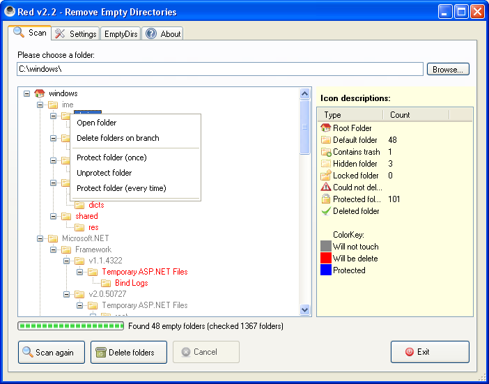
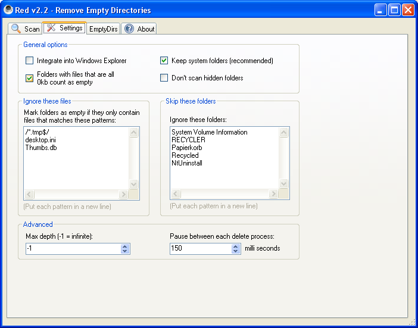
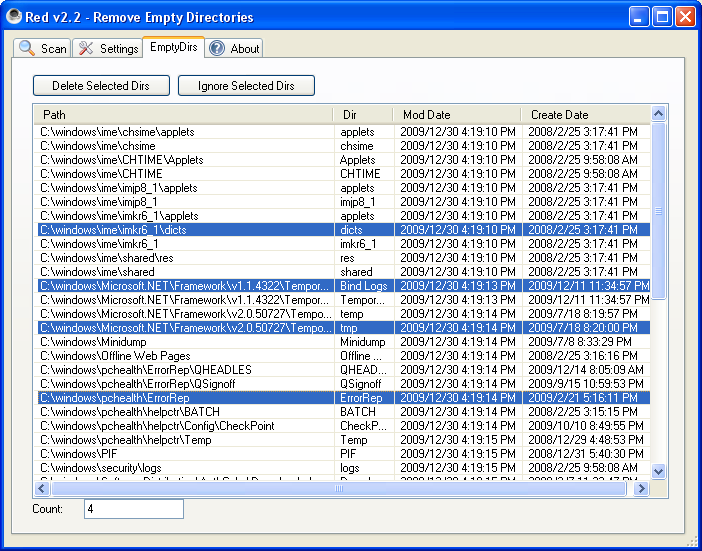
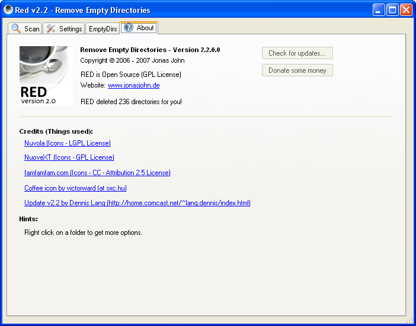

Source Code and Performance Metrics
lang.dennis@comcast.net
Linkedin: http://www.linkedin.com/pub/1/119/293
Updated: 22-Aug-2009
|
Welcome to Dennis Lang's Source Code and Performance Metrics
lang.dennis@comcast.net Updated: 22-Aug-2009 |
|
Download:
|
Define which files maybe present in empty directory Mark directories to permanently ignore or temporarily ignore View empty directories as Tree or List view. Delete All, Branch or selected directories.



